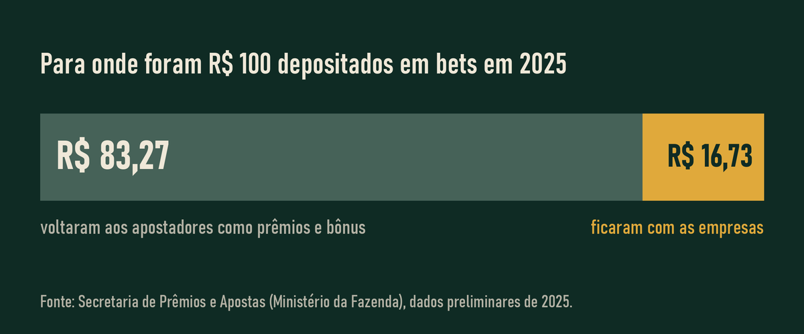

Quanto isso já custou
Primeiro, a conta do país. Depois, a sua.
O Brasil nas bets
Os números abaixo vêm de três fontes oficiais. Cada uma mede uma coisa diferente: a pesquisa do Senado pergunta às pessoas, o Banco Central olha as transferências por Pix e a Secretaria de Prêmios e Apostas recebe os dados das próprias empresas autorizadas.
| Fonte | O que mostra | Período |
|---|---|---|
| DataSenado | 22,13 milhões de pessoas apostaram nos 30 dias anteriores à pesquisa, 13% dos brasileiros com 16 anos ou mais | Junho de 2024 |
| Banco Central | Cerca de 5 milhões de beneficiários do Bolsa Família enviaram por volta de R$ 3 bilhões às bets por Pix | Agosto de 2024 |
| SPA1 | 25,2 milhões de pessoas apostaram nas empresas autorizadas | Ano de 2025, o primeiro do mercado regulado |
| R$ 220,6 bilhões depositados pelos apostadores | ||
| R$ 183,7 bilhões devolvidos em prêmios e bônus | ||
| Cerca de R$ 37 bilhões ficaram com as empresas, a chamada receita bruta, ou GGR |
1 Números preliminares divulgados pelo Ministério da Fazenda em janeiro de 2026. Todas as fontes estão na página Fontes, com a data em que foram consultadas (10/11/2026).

A sua conta
Responda com o valor que realmente sai do seu bolso para as apostas: depósitos, recargas e Pix para as casas. Nada do que você digitar sai deste computador.
Até hoje, saíram
R$ 0,00Isso dá R$ 0,00 por mês.
| Período | Dinheiro que saiu para apostas | Se tivesse guardado a 10% ao ano | |
|---|---|---|---|
| Em reais | Em aluguéis | ||
| Até hoje | |||
| Mais 1 ano no mesmo ritmo | |||
| Mais 5 anos no mesmo ritmo | |||
O rendimento de 10% ao ano é uma aproximação fixa, escolhida em novembro de 2026, e não a taxa de nenhuma aplicação específica. A conta usa juros compostos mensais: imês = (1,10)1/12 − 1, com depósitos todo mês.
Quem já passou por isso
Reportagem da Rádio CBN sobre o efeito das apostas esportivas na saúde mental e nas finanças de quem aposta.
Vídeo do canal da Rádio CBN no YouTube, exibido por incorporação.